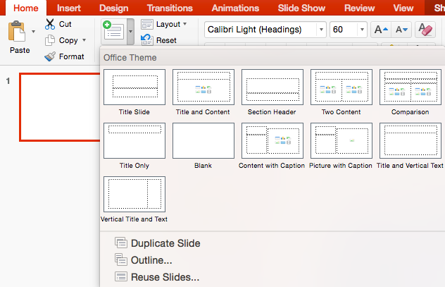

PowerPoint is an excellent tool for presentations of any kind, either in the classroom or at a conference. A PowerPoint presentation is made up of a series of slides that can be projected (displayed electronically) or printed in a variety of handout formats.
PowerPoint can be used for making conference posters — and many people do use it successfully — but we consider Adobe Illustrator a superior tool for this purpose as it is designed for creating high-quality print documents, whereas PowerPoint is designed for viewing on a computer or as a projected image.
Inserting a slide
When you open PowerPoint, a new presentation is created with a Title Slide in place. To add a new slide, go to the Home Ribbon.

- Click on the icon for new slide to insert a new slide with a duplicate layout as the current one selected in the presentation.
- Click on the text New Slide to select any layout, duplicate from what’s selected, or reuse slides from a different presentation.
The new slide will be added after the currently selected slide.
Move between your slides by clicking on the appropriate slide icon in the left sidebar, or use the double arrows at the bottom of the right scrollbar.
Changing the Slide Layout
You can always change the layout by going to the Home Ribbon and clicking on the Layout icon. If content is already on the slide, you may need to move things around a little.
Showing and Navigating Your Presentation
To play your presentation, go to the Presentation tab and click "Play from Start" (Keyboard option: hold down Control-Shift and press Enter). Advance through your presentation by pressing the Spacebar or right arrow key on the keyboard. To go back a slide, use either the left or up arrow key on your keyboard. In PowerPoint you can navigate directly to any slide by:
- Right-click anywhere on the slide, and choose By Title from the shortcut menu.
- Click on the appropriate slide. If the slide doesn’t have a title, it will say Slide #.

Instead of a list, PowerPoint gives you the option to see all of the slides as thumbnails while in the slideshow.
- Right-click anywhere on the slide, and choose See All Slides from the shortcut menu.
- Click on the thumbnail of the slide you would like to go to. PowerPoint will automatically restart the presentation from that slide.
To exit your presentation (and return to the editing view), press the esc key on the keyboard.